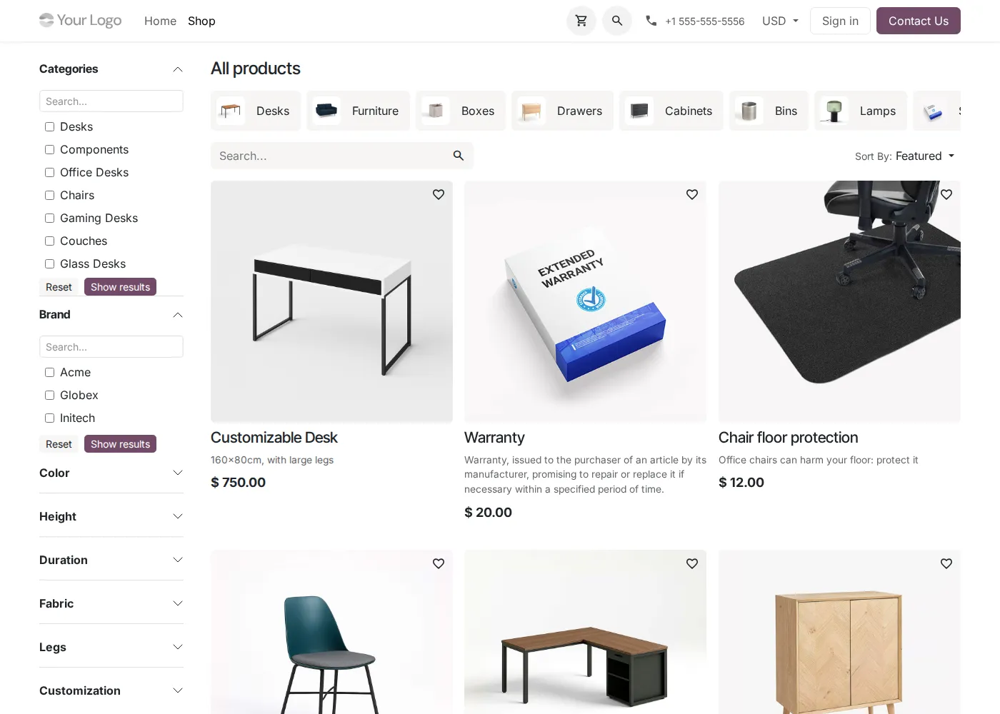
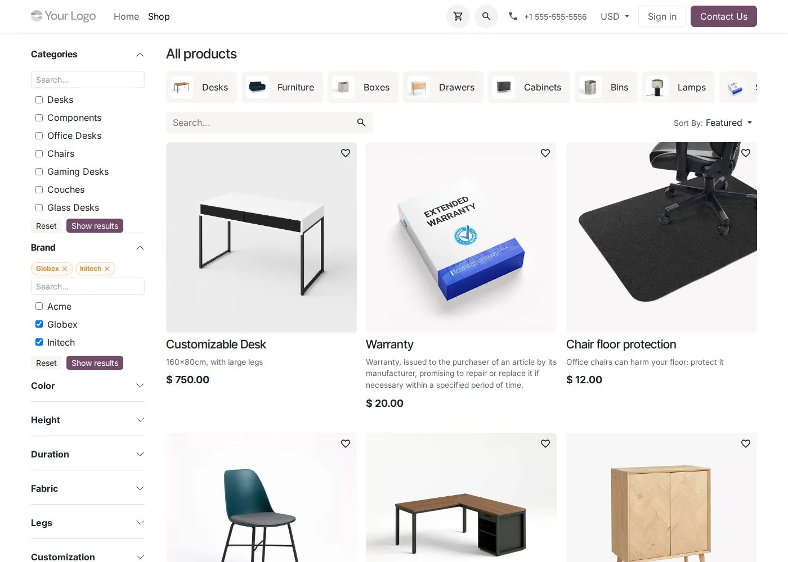
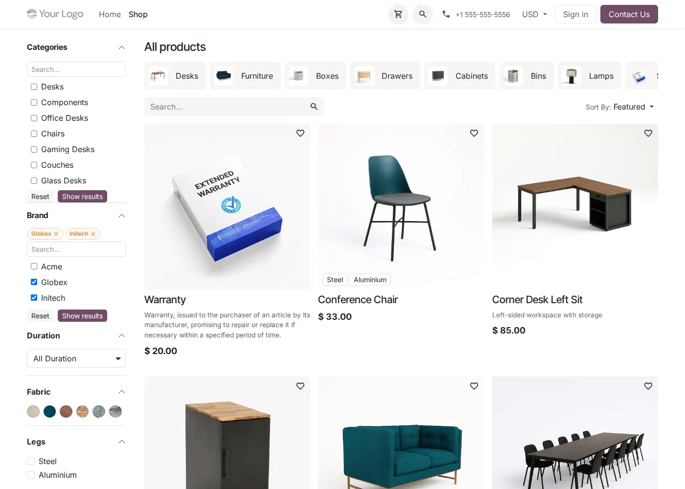

Website Multi-Select Filter: Brand
Add a multi-select Brand filter to the shop sidebar
- Price
- $9
- Odoo versions
- 16.0
- 17.0
- 18.0
- 19.0
- 20.0
- Technical name
tamadoo_multi_filter_brand- License
- OPL-1
Odoo 20.0: not listed on the store yet. Ask at tama.odoo@gmail.com.

Text and screenshots below are from the Odoo 20.0 version of this module.
Filter your shop by several brands at once.
What it does
Adds a multi-select Brand checkbox filter to your shop sidebar. Plugs into the reusable Website Multi-Select Filters widget and reuses the Brand model from Tamadoo Website Brand Filter — no duplicate data.
- Tick several brands at once and see all matching products.
- In-list search box, removable chips, kept across pagination and sorting.
- Only brands with at least one published product are shown.
How it looks
1. The Brand multi-select filter in the sidebar

2. Tick several brands — chips show your selection

3. The grid narrows to those brands

Step by step
1. Install the module
Website Multi-Select Filters and Tamadoo Website Brand Filter are installed with it.
2. Set brands on your products
Create your brands under Website → Configuration → Product Brands and give your published products a brand. Only brands with a published product are listed.
3. Open the shop
On /shop the left sidebar shows a Brand block below the Categories block. On a phone, tap the shop's filter button: the same block is in the panel that opens. It takes the place of the single-select brand list, so Brand is shown once.
4. Tick and show
Tick several brands, then click Show results. The grid shows the products of the ticked brands; Reset clears the filter.
Requirements
- Odoo 20 — eCommerce (
website_sale). - Website Multi-Select Filters (
tamadoo_multi_filter). - Tamadoo Website Brand Filter (
tamadoo_website_brand_filter).
Tamadoo · tama.odoo@gmail.com
Get Website Multi-Select Filter: Brand
Odoo 20.0: not listed on the store yet. Ask at tama.odoo@gmail.com.
Questions before buying? Write to tama.odoo@gmail.com.